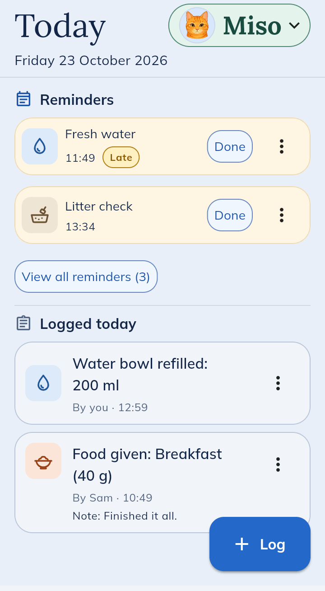
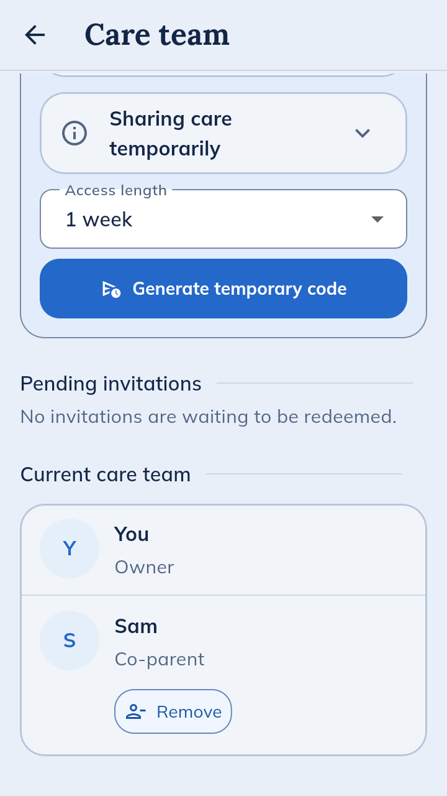
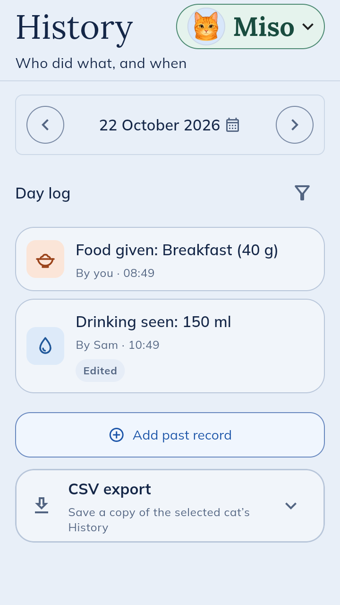
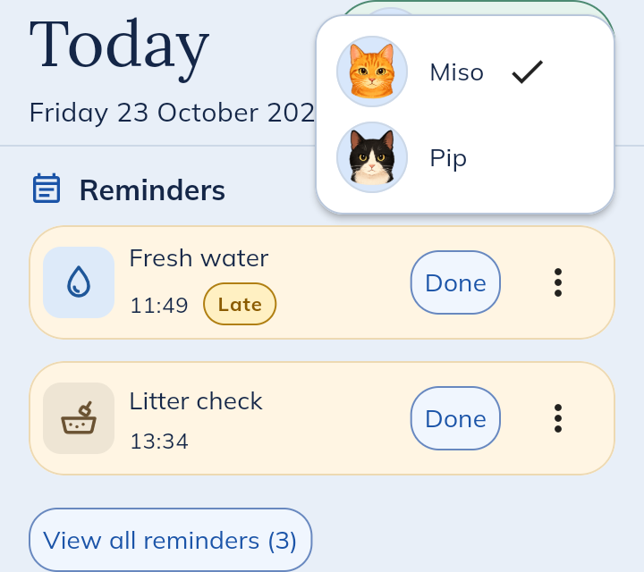

What it actually does
Here’s the app as it is at the moment, through a day of looking after a cat called Miso.
It’s free. Android and iPhone/iPad invitations are available.

Morning
Nobody feeds the cat twice
Sam feeds Miso before work and logs it. Later you open Today and see breakfast was 40 g, and that Miso finished it all.
Around lunchtime
Nothing slips through
The water’s gone late. Reminders lists what’s due today, and whoever gets to it taps Done. It’s a test version, so keep your usual reminders for medicine.
When something looks off
The vet’s number, one tap away
Care info is a cheat sheet for your cat, with the emergency vet’s and usual vet’s numbers. Tap one to ring. This is the bit I wished I’d had when Tokyo had an accident.
Friday, going away
A sitter, for as long as you choose
Give a friend access for three days, a week or a month. They can log what they do and see the routine, but can’t change your settings. When the time’s up, their access ends by itself.

Sharing is the bit I most want to see working. Try it with a partner or sitter.
Request an invitationBack home
Who did what, and when
History shows who did what on any day. If someone forgot to log something you can add it after, and you can save a CSV of a date range if the vet asks.

More than one cat
Up to three cats
Tap the name at the top to switch between cats. A household can have up to three for now.

What it can’t do yet
It’s a test version. It keeps a record of care and that’s it. It won’t give vet advice or tell you if something is wrong. A household can have up to three cats, you plus two other people, and one sitter at a time. Each person needs their own eligible device and invitation. It’s made for a cat that more than one person looks after, like a couple at home or an owner and their regular sitter.
Android phone alerts depend on your role, the test version and your notification settings. iPhone/iPad alerts are still being tested. Keep your usual reminders for medicine and anything urgent.
On an iPhone or iPad? Request an invitation and I’ll send you an invitation to TestFlight, Apple’s free app for trying early versions of apps.
Want to try it?
Send a short request and I’ll reply within a day. Partners and sitters send their own.
Some details may change before it’s public.